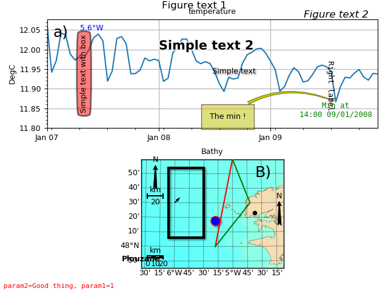

1.3.3.5.3.1. Add things to plots¶
Add things using method of core_plot objects.

# -*- coding: utf8 -*-
from vcmq import cdms2, curve2, map2, data_sample, N, P
# Curve
f = cdms2.open(data_sample('mars3d.t.nc'))
sst = f('temp')
f.close()
c = curve2(sst, subplot=211, date_fmt='%b %d', date_locator='day', vmin=11.8,
date_minor_locator='hour/6', show=False)
# Add a letter for subfigures like "a)"
c.add_key(1)
# Add a simple text
c.add_text(0.5, 0.5, 'Simple text', shadow=True)
c.add_text('2008/01/08', 12.0, 'Simple text 2', size=15, weight='bold',
glow=True, transform='data')
c.add_text(0.1, 0.5, 'Simple text with box', rotation=90., va='center',
bbox=dict(boxstyle='round4,pad=0.5', facecolor='r', alpha=0.5, linewidth=2))
# Add a label to the right/left/top/bottom
c.add_right_label('Right label', pos=0.05, family='monospace')
# Add lon/lat/time label
c.add_lon_label(0.1, 0.9, -5.6, color='b')
imin = N.argmin(sst)
tmin = sst.getTime().asComponentTime()[imin]
vmin = sst[imin]
c.add_time_label(tmin, vmin, tmin, fmt='Min at%n%H:%M %d/%m/%Y', va='top', ha='center',
color='g', transform='data')
# Add text to the figure
c.add_figtext('Figure text 1')
c.add_figtext(0.95, 0.95, 'Figure text 2', ha='right', style='italic')
# Add param info
c.add_param_label(dict(param1=1, param2='Good thing'), color='r')
# Add annotation
c.add_annotation(tmin, vmin, -150, -20, 'The min !',
bbox=dict(facecolor='y', alpha=.5, pad=10),
arrowprops=dict(arrowstyle='fancy', facecolor='y',
connectionstyle="arc3,rad=-.3", linewidth=0.3))
# Map
f = cdms2.open(data_sample('mars3d.xy.nc'))
h0 = f('temp', lat=(47.75, 49))
f.close()
m = map2(h0, fill='pcolormesh', title='Bathy', contour=False, colorbar=False,
subplot=212, proj='lcc', show=False, cmap='GMT_gebco_r')
# Add a letter for subfigures like "b)"
m.add_key('B', pos='top right', xmargin=20)
# Point
m.add_point(-5.3, 48.3, color='b', shadow=True, edgecolor='r', size=120)
# Place = point + text
m.add_place(-4.62138, 48.38197, 'Plouzane', size=100)
# Add lines
m.add_line([-5.3, 48, -5, 49], color='r')
m.add_lines([-5.3, -4.7, -5], [48, 48.5, 49], color='g')
# Add box
m.add_box([-6.1, 48.1, -5.5, 48.9], color='k', shadow=True, linewidth=3)
# Add arrow
m.add_arrow(-6, 48.5, 5, 5)
# Add map scale (maps only)
m.add_mapscale(barstyle='fancy')
# Add compass(maps only)
m.add_compass(pos=(0.97, .5))
# Add both!
m.add_mscp(pos='upper left')
P.tight_layout()
P.subplots_adjust(bottom=0.08)
m.savefigs(__file__)